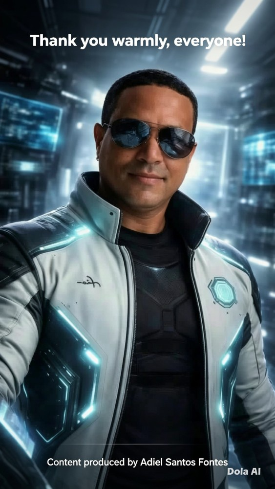

Conheça minha trajetória profissional, acadêmica e técnica.
Minha jornada na tecnologia começou ainda na era do Windows 3.11, passando por diversas evoluções tecnológicas até atuar hoje como Desenvolvedor Sênior e Especialista em Cibersegurança.
Desenvolver soluções seguras, modernas e eficientes, compartilhando conhecimento através da FydelisTech e contribuindo para a comunidade de tecnologia.
C#, ASP.NET, C++, Java, Spring Boot, APIs REST, Banco de Dados e Arquitetura de Sistemas.
Pentest, Red Team, OWASP, PTES, Análise de Vulnerabilidades, Segurança Ofensiva.
Linux, Kali Linux, Docker, Redes, Virtualização e Cloud.
Meu objetivo é unir desenvolvimento de software, infraestrutura e segurança da informação para criar soluções robustas, confiáveis e alinhadas às melhores práticas do mercado.
Através da FydelisTech compartilho conhecimento, artigos, pesquisas, tutoriais e experiências voltadas para profissionais e estudantes de tecnologia.